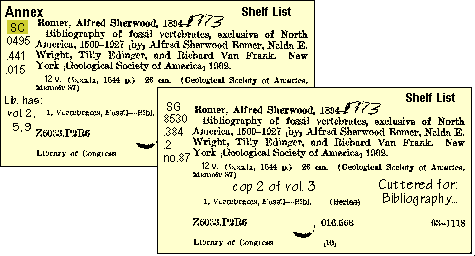

[Top]
-
Retrospective Conversions Procedural Outline
Holdings:
Footnotes (FNT or LFNT)

Always record CON in the FNT Field.
Record any
historical information
in the
LFNT
note.
Go back to:
Notes
Continue with:
Copy Numbers
[Top]
-
Retrospective Conversions Procedural Outline